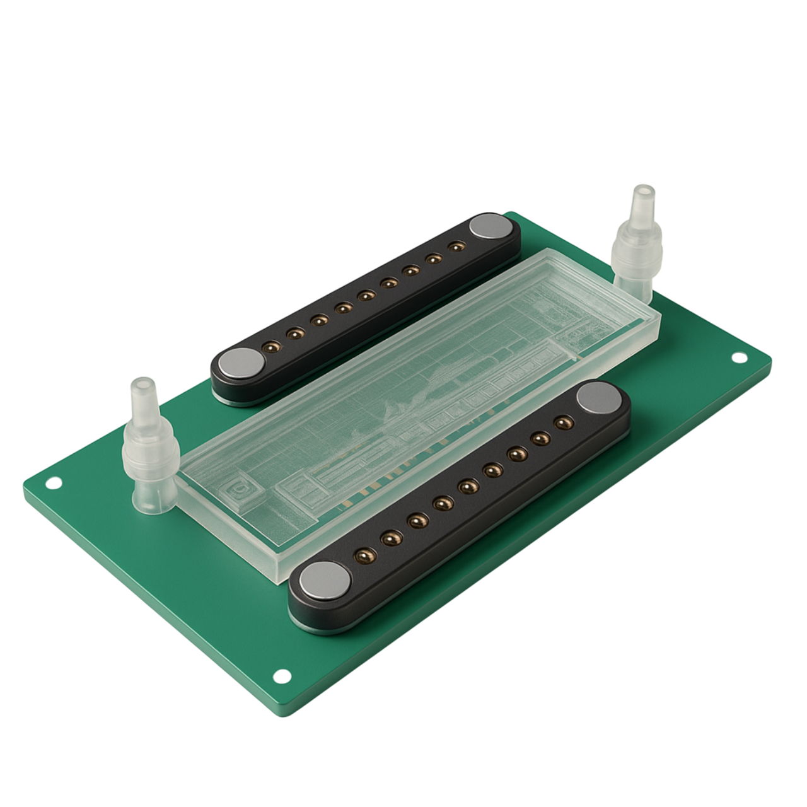

Friccao operacional
A monitorizacao continua fragmentada por dispositivos separados, visitas e etapas manuais de workflow.
ablute_ cruza saneamento, eficiencia hidrica e acesso de baixo atrito a dados de saude relevantes. O racional de negocio e mais forte quando enquadrado como valor de infraestrutura, e nao como novidade.
Esta conversa nao e apenas sobre produto. E sobre categoria, encaixe operacional e capacidade de execucao.
Oportunidade de mercado sustentada por pressao sistemica, nao apenas por tecnologia.
A monitorizacao continua fragmentada por dispositivos separados, visitas e etapas manuais de workflow.
Sociedades envelhecidas precisam de mais monitorizacao com menos trabalho disponivel e menos tolerancia para complexidade evitavel.
A infraestrutura de uso rotineiro pode tornar-se uma interface de baixo atrito para dados de saude relevantes e eficiencia de recursos.
ablute_ cria valor em tres camadas e por isso fala bem com varios tipos de parceiros.
Esta combinacao permite posicionar a oferta como logica de plataforma e nao como hardware de funcionalidade unica.

Visual tecnico para explicar sensing, PI e densidade cientifica da plataforma.
Diferentes portas de entrada para conversa comercial ou de investimento.
Interesse em workflows mais leves, melhor higiene e novas formas de monitorizacao contextual.
Forte fit com ambientes onde simplicidade, rotina e menor carga operacional sao criticas.
Design, eficiencia hidrica e narrativa diferenciada de infraestrutura abrem uma segunda linha de conversa.
Provas de seriedade suficientes para uma fase ainda inicial, sem overclaim.
Negocio, tecnologia, clinica e biossensores estao representados no nucleo da empresa.
Estrategia, parcerias e desenvolvimento de negocio.
Arquitetura tecnica, software, integracao de sensing e lideranca tecnica reconhecida.
Visao clinica e direcao cientifica em nanotecnologia e biossensores para diagnostico in vitro.
Contacto geral disponivel nos materiais de origem: info@ablute.pt
Site oficial: www.ablute.pt